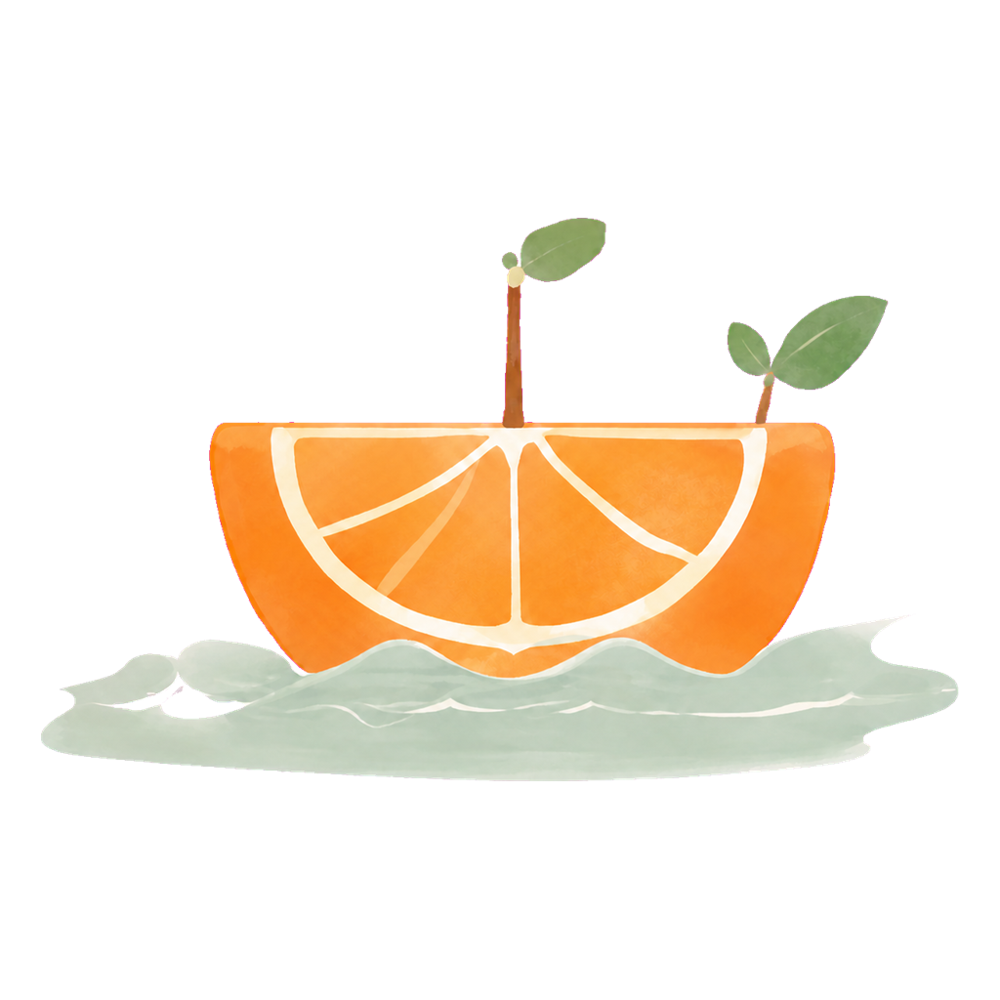
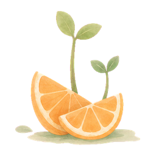

聊天页
初始门面与已有对话共用同一套原始布局。
初始空页面 · 布局锁定
9:41
● ◔ ▰
☰
橘子岛
克老师的记忆协议启动
总计 2,150,031 Tokens
首页
＋

欢迎使用 橘子岛。
❐
↻
⋮
克老师
我在沙箱里配置的全部包名和版本，你看还需要补什么：
1. alpine-baselayout v3.6.8-r0
Alpine base dir structure and init scripts
2. alpine-baselayout-data
Alpine base dir structure and init scripts
09:36 · 1,204 tokens
麻烦帮我再检查一下依赖关系。
09:38 · 已发送
克老师
好的，我会保留现在的配置，逐项确认依赖是否齐全。

09:39 · 328 tokens
网页
MCP
沙箱
文件
＋
输入消息
↑
Claude 4.5 Sonnet
流式响应 · 记忆已启用
调